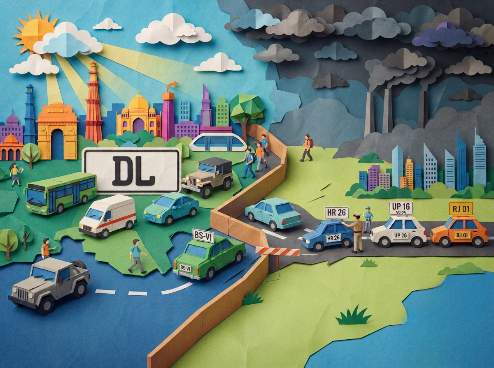

Delhi’s Number-Plate Ban: Clean Air by Postcode

Published on November 16, 2026 | Category: Politics
Delhi’s winter air is bad enough that the government has decided some cars belong on the wrong side of the border. From 1 November 2026 to 31 January 2027, any petrol or diesel vehicle registered outside the capital that fails to meet BS-VI norms is turned away. A BS-IV car bought in March 2018, still carrying valid PUC papers, is barred if the plate starts with HR, UP or RJ. The same car with a DL registration keeps driving.
The distinction rests on registration, not on what the engine actually puts into the air. It is a policy that looks decisive on paper and half-hearted in practice.
How many vehicles are caught
Transport department estimates and Parivahan records give a rough sense of the scale.
| Area | Vehicles below BS-VI (approx.) | Notes |
|---|---|---|
| Gurugram + Faridabad | ~2 lakh | Includes a large commercial share |
| Noida + Greater Noida | >4 lakh | Heavy on BS-IV petrol cars |
| Ghaziabad | ~4 lakh | Mostly private cars |
| Major NCR cities combined | >10 lakh | Department estimates |
| Wider adjoining districts | ~48 lakh | Two-wheelers, cars, goods vehicles |
A tighter count of BS-IV cars alone in four large feeder cities comes to about 2.56 lakh (Gurugram 1.23 lakh, Noida 53,119, Faridabad 34,405, Ghaziabad 46,129). One analysis of the same data put Delhi’s own BS-IV car fleet at roughly 13 lakh. The comparison is imperfect, yet it shows the selective reach of the rule. Delhi continues to run a much larger stock of similar vehicles inside its borders while restricting those that cross them.[1][2]
What the rule requires and what it leaves out
The ban forms part of Delhi’s Winter Action Plan and is now intended to operate every year between 1 November and 31 January. It sits alongside the Graded Response Action Plan (GRAP). GRAP stages are triggered by rising Air Quality Index levels and can impose additional, temporary restrictions across the entire NCR. The Winter Action Plan measure is fixed in the calendar; GRAP moves with the pollution numbers.
CNG vehicles, electric vehicles, ambulances, fire tenders, police vehicles and other categories specifically notified by the Environment Department are exempt. Vehicles registered in Delhi itself fall outside this particular entry restriction, though they remain subject to age-based rules, PUC requirements and any GRAP-stage curbs that apply.
The stated objective is to reduce vehicular emissions during the months when Delhi’s air is worst. Officials have framed the package as an early and firm response. The vehicle piece, however, targets the easy-to-police outsiders while leaving the larger domestic fleet largely untouched.
Enforcement on the ground
In the first nine or ten days of November, traffic police and transport teams turned back roughly 16,800 to 18,000 vehicles. Several hundred received challans. Dozens were impounded. Fines linked to the entry ban crossed ₹1.4 crore, with private cars accounting for a large share.[9]
The figure most often cited for an entry violation is ₹20,000 under the Motor Vehicles Act. Separate PUC offences start at ₹1,000 and can rise on repetition. Impoundment is not automatic. When it occurs, the owner typically pays the fine plus towing and storage charges before the vehicle is released.
Enforcement relies on physical checks and Automatic Number Plate Recognition cameras. Some drivers and posts on X describe informal negotiations at the roadside-the choice between a full challan, a U-turn, or a lower cash settlement. These remain reports rather than systematic findings, but the discretionary power at the border creates the conditions for them. A rule that is hard to enforce uniformly and easy to bend at the checkpoint is a rule that invites workarounds.[6][7]
Voices from the people who actually live with it
Brajesh Sharma, who lives in Sector 78, Noida, and drives a 2018 BS-IV Tata Tiago into Delhi for work, called the policy wrong and suggested the neighbouring districts might impose matching restrictions. He also asked what happens in a medical emergency.[3]
Pankaj Gupta from Greater Noida West said public transport is hard to reach from his area and that buying a new car is not realistic for many families.[3]
Ishfaq Hamid, who runs a shop in Chandni Chowk and lives in Indirapuram, now takes the Metro and spends roughly ₹300 a day extra. He wants rules based on emission standards, not registration.[4]
Sana, a professor at Jamia Hamdard living in Gurugram, has switched to Metro, auto-rickshaws and battery rickshaws.[4]
Tarun was turned back at the Chilla border while travelling from Noida and said turning vehicles around is no lasting answer.[5]
A LocalCircles survey of more than 18,000 residents found that 57 percent rated enforcement poor or very poor. An earlier survey showed 87 percent thought other pollution sources should have been tackled first.[8]
These are not abstract complaints. They come from people who bought legal cars, maintained them, paid their taxes, and now find the rules rewritten against them because their plates carry the wrong letters.
Why this policy deserves to be called out
Vehicles contribute to Delhi’s winter pollution, but they are one source among several. Construction dust, road dust, biomass burning, industry and weather all matter. A registration-based filter is simpler to administer than real-time emission testing. It is also a blunt and uneven instrument.
The core problem is the double standard. Delhi’s own BS-IV fleet continues to operate while identical cars from Noida, Gurugram or Faridabad are turned back. Pollution does not respect state borders. A policy that pretends it does is performing seriousness rather than practising it.
Border queues generate their own idling emissions. Commuters who can afford it shift to cabs or multiple last-mile rides. Those who cannot absorb the cost and the lost time. Households that bought BS-IV cars in good faith before the April 2020 BS-VI mandate now find a major asset partly unusable for three months each year. The rule effectively devalues those vehicles without compensation or transition support.
The economic effect is visible even if it was not openly stated as a goal. Owners of still-working older cars face pressure to upgrade. That outcome benefits the new-vehicle market and the scrap-and-replace ecosystem. For many middle-income households the choice is between higher daily commuting costs, inconvenience, or taking on fresh debt for a replacement car. A clean-air measure that functions as an informal sales incentive for newer cars deserves scrutiny.
Whether the ban has produced a measurable, lasting improvement in air quality remains unclear. Early numbers show enforcement activity, not clear attribution of cleaner air to this measure alone. Source-apportionment studies have long shown vehicles are only one contributor. A policy that leaves a larger domestic fleet of similar vehicles untouched while restricting cross-border ones will always face questions about consistency and effectiveness.
There is also the equity angle. The people most affected are often daily wage earners, small traders, and middle-class professionals who live in the NCR because housing in Delhi itself is unaffordable. The policy lands hardest on those with the least flexibility.
Practical notes for owners
Anyone unsure of a vehicle’s emission norm can check it on the Parivahan or Vahan portal under “Know Your Vehicle Details.” The emission norms field will indicate BS-IV, BS-VI or the relevant standard. Keep digital copies of the registration certificate and PUC in DigiLocker or the mParivahan app. CNG or electric options, where available and practical, remain the surest way around the restriction.
Owners who must enter Delhi during the window have limited options: park outside and take last-mile public transport, switch to an exempt fuel type if feasible, or absorb the risk of being turned back or fined. Medical emergencies and other essential travel are supposed to be covered by the exemption categories, but the practical experience at the border can still vary.
A consistency test that Delhi would not like
If the governing logic is that vehicles below BS-VI should stay out of a high-pollution zone in winter, the same logic can travel the other way. Haryana, Uttar Pradesh and Rajasthan could restrict Delhi-registered vehicles below BS-VI during the same months. Such a step would show whether the policy is driven by emission standards or by jurisdiction. Pollution itself does not stop at the Delhi border. A city that demands clean air while exporting the inconvenience of its rules has little standing to object when the neighbours return the favour.
The rule has a surface rationale. Older vehicles generally emit more, and winters are the hardest months. The instrument chosen-a seasonal, registration-based filter that leaves a larger domestic fleet of similar vehicles untouched-favours administrative convenience and political visibility over consistency. It is easier to stop cars at the border than to confront the full inventory of pollution sources inside the city. Until the criterion shifts from the letters on a number plate to the actual performance of the engine, the policy will continue to look like a partial, uneven, and ultimately unserious response.
References
- Indian Express: Non-BS VI vehicle entry ban November 1 air pollution / Financial Express: Delhi vehicle ban kicks in
- Indian Masterminds: Parivahan-based analysis of BS-IV cars and NCR pollution policy
- Hindustan Times: What if someone falls ill? Delhi's non-BS-VI vehicle ban leaves Noida commuters worried
- The New Indian Express: Delhi's vehicle ban targets NCR commuters unlike emission-based pollution curbs in global cities
- Indian Express: Delhi preventive non-BS-VI vehicle ban border traffic disruptions
- X (formerly Twitter): Post on border enforcement
- X (formerly Twitter): Posts calling for uniform NCR rules (Part 1) / Part 2
- The Print: 57% in NCR rate Delhi's enforcement of old vehicle ban as poor / LocalCircles Survey
- Hindustan Times: Delhi-NCR non-BS-VI vehicle ban challans and fines / Times of India: Over 16,800 vehicles turned back
- NDTV: Delhi vehicle ban rules and ₹20,000 penalty